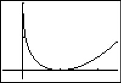
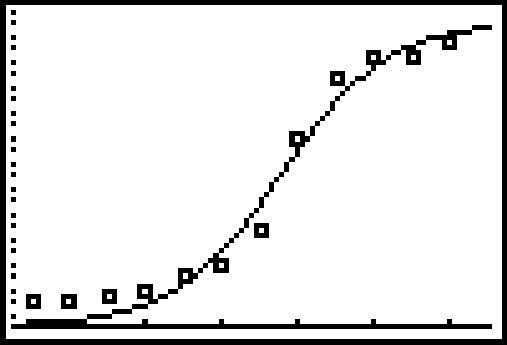

Funções Exponencial e Logarítmica
24 Aplicações das Funções Exponencial e Logaritmo
Resumo do capítulo
Com a teoria estabelecida, este capítulo explora aplicações clássicas das funções exponencial e logarítmica: juros compostos e contínuos, crescimento e decaimento exponencial (incluindo decaimento radioativo e datação por carbono-14), a Lei do Resfriamento de Newton e modelos de crescimento populacional ajustados a dados reais.
Para cada um dos cenários dados nos Exercícios 1 - 6,
- Encontre o valor $A$ na conta em função do prazo do investimento $t$ em anos.
- Determine quanto está na conta após $5$ anos, $10$ anos, $30$ anos e $35$ anos. Arredonde suas respostas para o centavo mais próximo.
- Determine quanto tempo levará para o investimento inicial dobrar. Arredonde sua resposta para o ano mais próximo.
- Encontre e interprete a taxa média de variação do valor na conta desde o final de do quarto ano até o final do quinto ano, e do final do trigésimo quarto ano até o final do trigésimo quinto ano. Arredonde sua resposta para duas casas decimais.
- $A(t) = 500\left(1 + \frac{0.0075}{12}\right)^{12t}$
- $A(5) \approx \$ 519.10$, $A(10) \approx \$ 538.93$, $A(30) \approx \$ 626.12$, $A(35) \approx \$ 650.03$
- Levará aproximadamente $92$ anos para o investimento dobrar.
- A taxa média de variação do final do quarto ano ao final do quinto ano é de aproximadamente $3.88$. Isso significa que, nesse ponto, o investimento está crescendo a uma taxa média de $\$3.88$ por ano. A taxa média de variação do final do trigésimo quarto ano ao final do trigésimo quinto ano é de aproximadamente $4.85$. Isso significa que, nesse ponto, o investimento está crescendo a uma taxa média de $\$4.85$ por ano.
- $\$500$ é investido em uma conta que oferece $0.75 \%$, compostos continuamente.resposta
- $A(t) = 500e^{0.0075t}$
- $A(5) \approx \$ 519.11$, $A(10) \approx \$ 538.94$, $A(30) \approx \$ 626.16$, $A(35) \approx \$ 650.09$
- Levará aproximadamente $92$ anos para o investimento dobrar.
- A taxa média de variação do final do quarto ano ao final do quinto ano é de aproximadamente $3.88$. Isso significa que, nesse ponto, o investimento está crescendo a uma taxa média de $\$3.88$ por ano. A taxa média de variação do final do trigésimo quarto ano ao final do trigésimo quinto ano é de aproximadamente $4.86$. Isso significa que, nesse ponto, o investimento está crescendo a uma taxa média de $\$4.86$ por ano.
- $\$1000$ é investido em uma conta que oferece $1.25 \%$, compostos mensalmente.resposta
- $A(t) = 1000\left(1 + \frac{0.0125}{12}\right)^{12t}$
- $A(5) \approx \$ 1064.46$, $A(10) \approx \$ 1133.07$, $A(30) \approx \$ 1454.71$, $A(35) \approx \$ 1548.48$
- Levará aproximadamente $55$ anos para o investimento dobrar.
- A taxa média de variação do final do quarto ano ao final do quinto ano é de aproximadamente $13.22$. Isso significa que, nesse ponto, o investimento está crescendo a uma taxa média de $\$13.22$ por ano. A taxa média de variação do final do trigésimo quarto ano ao final do trigésimo quinto ano é de aproximadamente $19.23$. Isso significa que, nesse ponto, o investimento está crescendo a uma taxa média de $\$19.23$ por ano.
- $\$1000$ é investido em uma conta que oferece $1.25 \%$, compostos continuamente.resposta
- $A(t) = 1000e^{0.0125t}$
- $A(5) \approx \$ 1064.49$, $A(10) \approx \$ 1133.15$, $A(30) \approx \$ 1454.99$, $A(35) \approx \$ 1548.83$
- Levará aproximadamente $55$ anos para o investimento dobrar.
- A taxa média de variação do final do quarto ano ao final do quinto ano é de aproximadamente $13.22$. Isso significa que, nesse ponto, o investimento está crescendo a uma taxa média de $\$13.22$ por ano. A taxa média de variação do final do trigésimo quarto ano ao final do trigésimo quinto ano é de aproximadamente $19.24$. Isso significa que, nesse ponto, o investimento está crescendo a uma taxa média de $\$19.24$ por ano.
- $\$5000$ é investido em uma conta que oferece $2.125 \%$, compostos mensalmente.resposta
- $A(t) = 5000\left(1 + \frac{0.02125}{12}\right)^{12t}$
- $A(5) \approx \$ 5559.98$, $A(10) \approx \$ 6182.67$, $A(30) \approx \$ 9453.40$, $A(35) \approx \$ 10512.13$
- Levará aproximadamente $33$ anos para o investimento dobrar.
- A taxa média de variação do final do quarto ano ao final do quinto ano é de aproximadamente $116.80$. Isso significa que, nesse ponto, o investimento está crescendo a uma taxa média de $\$116.80$ por ano. A taxa média de variação do final do trigésimo quarto ano ao final do trigésimo quinto ano é de aproximadamente $220.83$. Isso significa que, nesse ponto, o investimento está crescendo a uma taxa média de $\$220.83$ por ano.
- $A(t) = 5000e^{0.02125t}$
- $A(5) \approx \$ 5560.50$, $A(10) \approx \$ 6183.83$, $A(30) \approx \$ 9458.73$, $A(35) \approx \$ 10519.05$
- Levará aproximadamente $33$ anos para o investimento dobrar.
- A taxa média de variação do final do quarto ano ao final do quinto ano é de aproximadamente $116.91$. Isso significa que, nesse ponto, o investimento está crescendo a uma taxa média de $\$116.91$ por ano. A taxa média de variação do final do trigésimo quarto ano ao final do trigésimo quinto ano é de aproximadamente $221.17$. Isso significa que, nesse ponto, o investimento está crescendo a uma taxa média de $\$221.17$ por ano.
- Reveja suas respostas aos Exercícios 1 - 6. O que pode ser dito sobre a diferença entre a capitalização mensal e a capitalização contínua dos juros nessas situações? Com a ajuda de seus colegas, discuta cenários em que a diferença entre juros compostos mensais e continuamente compostos seria mais dramática. Experimente variar a taxa de juros, o prazo do investimento e o principal. Use cálculos para apoiar sua resposta.
- Quanto dinheiro precisa ser investido agora para obter $\$2,000$ em 3 anos se a taxa de juros em uma conta poupança for $0.25 \%$, composta continuamente? Arredonde sua resposta para o centavo mais próximo.resposta$P = \frac{2000}{e^{0.0025 \cdot 3}} \approx \$ 1985.06$
- Quanto dinheiro precisa ser investido agora para obter $\$5,000$ em 10 anos se a taxa de juros de um Certificado de Depósito (CD) for $2.25 \%$, composta mensalmente? Arredonde sua resposta para o centavo mais próximo.resposta$P = \frac{5000}{\left(1 + \frac{0.0225}{12}\right)^{12 \cdot 10}} \approx \$ 3993.42$
- Em 31 de maio de 2009, a Taxa Percentual Anual anunciada pelo banco de Jeff para contas poupança comuns era de $0.25\%$, composta mensalmente. Use a fórmula de juros compostos para responder ao que se pede.resposta
- Se $P = 2000$, quanto vale $A(8)$?
- Resolva a equação $A(t) = 4000$ para $t$.
- Que principal $P$ deve ser investido para que o saldo da conta seja \$2000 em três anos?
- $A(8) = 2000\left(1 + \frac{0.0025}{12}\right)^{12 \cdot 8} \approx \$2040.40$
- $t = \dfrac{\ln(2)}{12 \ln\left(1 + \frac{0.0025}{12}\right)} \approx 277.29$ anos
- $P = \dfrac{2000}{\left(1 + \frac{0.0025}{12}\right)^{36}} \approx \$1985.06$
- O banco de Jeff também oferece um Certificado de Depósito (CD) de 36 meses com uma Taxa Percentual Anual de $2.25\%$.resposta
- Se $P = 2000$, quanto vale $A(8)$?
- Resolva a equação $A(t) = 4000$ para $t$.
- Que principal $P$ deve ser investido para que o saldo da conta seja \$2000 em três anos?
- O Rendimento Percentual Anual é a taxa de juros simples que devolve a mesma quantia de juros após um ano que os juros compostos devolvem. Com a ajuda de seus colegas, calcule o Rendimento Percentual Anual deste investimento.
- $A(8) = 2000\left(1 + \frac{0.0225}{12}\right)^{12 \cdot 8} \approx \$2394.03$
- $t = \dfrac{\ln(2)}{12 \ln\left(1 + \frac{0.0225}{12}\right)} \approx 30.83$ anos
- $P = \dfrac{2000}{\left(1 + \frac{0.0225}{12}\right)^{36}} \approx \$1869.57$
- $\left(1 + \frac{0.0225}{12}\right)^{12} \approx 1.0227$, então o Rendimento Percentual Anual é 2.27\%
- Uma financeira oferece uma promoção em empréstimos de $\$5000$. O tomador não precisa fazer nenhum pagamento durante os três primeiros anos, porém os juros continuarão a incidir sobre o empréstimo à taxa de $29.9 \%$, composta continuamente. Que quantia será devida ao final do período de três anos, supondo que nenhum pagamento seja feito? Se a promoção for estendida por mais três anos, sem nenhum pagamento, que quantia seria devida?resposta$A(3) = 5000e^{0.299 \cdot 3} \approx \$12,226.18$, $A(6) = 5000e^{0.299 \cdot 6} \approx \$30,067.29$
- Use a fórmula de juros compostos para mostrar que o tempo necessário para um investimento dobrar de valor não depende do principal $P$, mas sim apenas da Taxa Percentual Anual e do número de capitalizações por ano. Tome $n = 12$ e, com a ajuda de seus colegas, calcule o tempo de duplicação para diversas taxas $r$. Em seguida, procure a Regra dos 72 e compare suas respostas com o que essa regra prevê. Se você estiver realmente interessado*Ótimo trocadilho! em Matemática Financeira, pode também comparar e contrastar a Regra dos 72 com a Regra dos 70 e a Regra dos 69.
Nos Exercícios 14 - 18, listamos alguns isótopos radioativos e suas respectivas meias-vidas. Suponha que cada um decaia de acordo com a fórmula $A(t) = A_{\text{ $0$}}e^{kt}$, onde $A_{\text{ $0$}}$ é a quantidade inicial do material e $k$ é a constante de decaimento. Para cada isótopo:
- Encontre a constante de decaimento $k$. Arredonde sua resposta para quatro casas decimais.
- Encontre uma função que forneça a quantidade $A$ do isótopo que resta após um tempo $t$. (Mantenha as unidades de $A$ e $t$ iguais às dos dados fornecidos.)
- Determine quanto tempo leva para que $90 \%$ do material decaia. Arredonde sua resposta para duas casas decimais. (DICA: se $90 \%$ do material decai, quanto resta?)
- Cobalto 60, usado na irradiação de alimentos, quantidade inicial de 50 gramas, meia-vida de $5.27$ anos.resposta
- $k = \frac{\ln(1/2)}{5.27} \approx -0.1315$
- $A(t) = 50e^{-0.1315t}$
- $t = \frac{\ln(0.1)}{-0.1315} \approx 17.51$ anos.
- Fósforo 32, usado na agricultura, quantidade inicial de 2 miligramas, meia-vida de $14$ dias.resposta
- $k = \frac{\ln(1/2)}{14} \approx -0.0495$
- $A(t) = 2e^{-0.0495t}$
- $t = \frac{\ln(0.1)}{-0.0495} \approx 46.52$ dias.
- Cromo 51, usado para rastrear glóbulos vermelhos, quantidade inicial de 75 miligramas, meia-vida de $27.7$ dias.resposta
- $k = \frac{\ln(1/2)}{27.7} \approx -0.0250$
- $A(t) = 75e^{-0.0250t}$
- $t = \frac{\ln(0.1)}{-0.025} \approx 92.10$ dias.
- Amerício 241, usado em detectores de fumaça, quantidade inicial de 0.29 microgramas, meia-vida de $432.7$ anos.resposta
- $k = \frac{\ln(1/2)}{432.7} \approx -0.0016$
- $A(t) = 0.29e^{-0.0016t}$
- $t = \frac{\ln(0.1)}{-0.0016} \approx 1439.11$ anos.
- Urânio 235, usado na geração de energia nuclear, quantidade inicial de $1$ kg, meia-vida de $704$ milhões de anos.resposta
- $k = \frac{\ln(1/2)}{704} \approx -0.0010$
- $A(t) = e^{-0.0010t}$
- $t = \frac{\ln(0.1)}{-0.0010} \approx 2302.58$ milhões de anos, ou $2.30$ bilhões de anos.
- Com a ajuda de seus colegas, mostre que o tempo necessário para que $90 \%$ de cada isótopo listado nos Exercícios 14 - 18 decaia não depende da quantidade inicial da substância, mas sim apenas da constante de decaimento $k$. Encontre uma fórmula, em termos apenas de $k$, para determinar quanto tempo leva para que $90 \%$ de um isótopo radioativo decaia.resposta$t = \frac{\ln(0.1)}{k} = -\frac{\ln(10)}{k}$
- No exemplo de depreciação de carros da Capítulo 20, a função exponencial $V(x) = 25 \left(\frac{4}{5}\right)^{x}$ foi usada para modelar o valor de um carro ao longo do tempo. Use as propriedades dos logaritmos e/ou dos expoentes para reescrever o modelo na forma $V(t) = 25e^{kt}$.resposta$V(t) = 25e^{\ln\left(\frac{4}{5}\right)t} \approx 25e^{-0.22314355t}$
- O Produto Interno Bruto (PIB) dos EUA (em bilhões de dólares) $t$ anos após o ano 2000 pode ser modelado por: \[ G(t) = 9743.77 e^{0.0514t}\]resposta
- Encontre e interprete $G(0)$.
- De acordo com o modelo, qual deveria ter sido o PIB em 2007? E em 2010? (De acordo com o Departamento de Comércio dos EUA, o PIB de 2007 foi de $\$14,369.1$ bilhões e o PIB de 2010 foi de $\$14,657.8$ bilhões.)
- $G(0) = 9743.77$. Isso significa que o PIB dos EUA em 2000 era de $\$9743.77$ bilhões de dólares.
- $G(7) = 13963.24$ e $G(10) = 16291.25$, então o modelo previu um PIB de $\$ 13,963.24$ bilhões em 2007 e $\$ 16,291.25$ bilhões em 2010.
- O diâmetro $D$ de um tumor, em milímetros, $t$ dias após sua detecção é dado por: \[D(t) = 15e^{0.0277t} \]resposta
- Qual era o diâmetro do tumor quando foi detectado originalmente?
- Quanto tempo até o diâmetro do tumor dobrar?
- $D(0) = 15$, então o tumor tinha 15 milímetros de diâmetro quando foi detectado pela primeira vez.
- $t = \frac{\ln(2)}{0.0277} \approx 25$ dias.
- Em condições ideais, o crescimento de uma certa cepa de E. Coli é modelado pela Lei do Crescimento Desinibido $N(t) = N_{\text{ $0$}} e^{kt}$, onde $N_{\text{ $0$}}$ é o número inicial de bactérias e $t$ é o tempo decorrido, medido em minutos. A partir de numerosos experimentos, determinou-se que o tempo de duplicação desse organismo é de 20 minutos. Suponha que 1000 bactérias estejam presentes inicialmente.resposta
- Encontre a constante de crescimento $k$. Arredonde sua resposta para quatro casas decimais.
- Encontre uma função que forneça o número de bactérias $N(t)$ após $t$ minutos.
- Quanto tempo até haver 9000 bactérias? Arredonde sua resposta para o minuto mais próximo.
- $k = \frac{\ln(2)}{20} \approx 0.0346$
- $N(t) = 1000e^{0.0346 t}$
- $t = \frac{\ln(9)}{0.0346} \approx 63$ minutos
- Leveduras são frequentemente usadas em experimentos biológicos. Uma técnica de pesquisa estima que uma amostra de suspensão de levedura contém 2.5 milhões de organismos por centímetro cúbico (cc). Duas horas depois, ela estima que a densidade populacional é de 6 milhões de organismos por cc. Seja $t$ o tempo decorrido desde a primeira observação, medido em horas. Suponha que o crescimento da levedura siga a Lei do Crescimento Desinibido $N(t) = N_{\text{ $0$}} e^{kt}$.resposta
- Encontre a constante de crescimento $k$. Arredonde sua resposta para quatro casas decimais.
- Encontre uma função que forneça o número de leveduras (em milhões) por cc, $N(t)$, após $t$ horas.
- Qual é o tempo de duplicação dessa cepa de levedura?
- $k = \frac{1}{2}\frac{\ln(6)}{2.5} \approx 0.4377$
- $N(t) = 2.5e^{0.4377 t}$
- $t = \frac{\ln(2)}{0.4377} \approx 1.58$ horas
- A Lei do Crescimento Desinibido também se aplica a situações em que um animal é reintroduzido em um ambiente adequado. Um caso desses é a reintrodução de lobos no Parque Nacional de Yellowstone. De acordo com o Serviço de Parques Nacionais dos EUA, a população de lobos no Parque Nacional de Yellowstone era de 52 em 1996 e 118 em 1999. Usando esses dados, encontre uma função da forma $N(t) = N_{\text{ $0$}} e^{kt}$ que modele o número de lobos $t$ anos após 1996. (Use $t = 0$ para representar o ano de 1996. Além disso, arredonde o valor de $k$ para quatro casas decimais.) De acordo com o modelo, quantos lobos havia em Yellowstone em 2002? (O número registrado é 272.)resposta$N_{\text{ $0$}} = 52$, $k = \frac{1}{3} \ln\left( \frac{118}{52}\right) \approx 0.2731$, $N(t) = 52e^{0.2731t}$. $N(6) \approx 268$.
- Nos primeiros anos de uma comunidade, não é incomum que a população cresça de acordo com a Lei do Crescimento Desinibido. De acordo com o verbete da Wikipédia sobre Painesville, em 1860 a Vila de Painesville tinha uma população de 2649 habitantes. Em 1920, a população era de 7272. Use esses dois pontos de dados para ajustar um modelo da forma $N(t) = N_{\text{ $0$}} e^{kt}$, onde $N(t)$ é o número de habitantes de Painesville $t$ anos após 1860. (Use $t = 0$ para representar o ano de 1860. Além disso, arredonde o valor de $k$ para quatro casas decimais.) De acordo com esse modelo, qual era a população de Painesville em 2010? (O censo de 2010 registrou uma população de 19,563.) Quais poderiam ser algumas causas para uma discrepância tão grande? Para saber mais sobre isso, veja o Exercício 37.resposta$N_{\text{ $0$}} = 2649$, $k = \frac{1}{60} \ln\left( \frac{7272}{2649}\right) \approx 0.0168$, $N(t) = 2649e^{0.0168t}$. $N(150) \approx 32923$, portanto a população de Painesville em 2010, segundo este modelo, teria sido de 32,923.
- A população de mapinguaris no Amazonas é modelada por \[P(t) = \dfrac{120}{1 + 3.167e^{-0.05t}}\] onde $P(t)$ é a população de mapinguaris $t$ anos após $2010$.resposta
- Encontre e interprete $P(0)$.
- Encontre a população de mapinguaris no Amazonas em 2013. Arredonde sua resposta para o mapinguari mais próximo.
- Quando a população de mapinguaris no Amazonas atingirá 60? Arredonde sua resposta para o ano mais próximo.
- Encontre e interprete o comportamento nas extremidades do gráfico de $y = P(t)$. Verifique sua resposta usando uma ferramenta gráfica.
- $P(0) = \frac{120}{4.167} \approx 29$. Há 29 mapinguaris no Amazonas em 2010.
- $P(3) = \frac{120}{1+3.167e^{-0.05(3)}} \approx 32$ mapinguaris.
- $t = 20 \ln(3.167) \approx 23$ anos.
- Quando $t \rightarrow \infty$, $P(t) \rightarrow 120$. Com o passar do tempo, a população de mapinguaris no Amazonas se aproximará de 120. Graficamente, $y = P(x)$ tem uma assíntota horizontal $y=120$.
- A meia-vida do isótopo radioativo Carbono-14 é de aproximadamente 5730 anos.resposta
- Use a fórmula de decaimento radioativo para expressar a quantidade de Carbono-14 restante a partir de $N$ miligramas iniciais, em função do tempo $t$ em anos.
- Que porcentagem da quantidade original de Carbono-14 resta após 20,000 anos?
- Se uma velha ferramenta de madeira é encontrada em uma caverna e estima-se que a quantidade de Carbono-14 nela presente seja de apenas 42\% da quantidade original, qual é aproximadamente a idade da ferramenta?
- A datação por radiocarbono não é tão simples quanto esses exercícios podem sugerir. Com a ajuda de seus colegas, pesquise sobre a datação por radiocarbono e discuta por que nosso modelo é um tanto simplificado demais.
- $A(t) = Ne^{-\left(\frac{\ln(2)}{5730}\right)t} \approx Ne^{-0.00012097t}$
- $A(20000) \approx 0.088978 \cdot N$, portanto restam cerca de 8.9\%
- $t \approx \dfrac{\ln(.42)}{-0.00012097} \approx 7171$ anos de idade
- O Carbono-14 não pode ser usado para datar material inorgânico, como rochas, mas existem muitos outros métodos de datação radiométrica que estimam a idade de rochas. Um deles, a datação Rubídio-Estrôncio, usa o Rubídio-87, que decai em Estrôncio-87 com meia-vida de 50 bilhões de anos. Use a fórmula de decaimento radioativo para expressar a quantidade de Rubídio-87 restante a partir de 2.3 microgramas iniciais, em função do tempo $t$ em bilhões de anos. Pesquise essa e outras técnicas radiométricas e discuta as margens de erro dos diversos métodos com seus colegas.resposta$A(t) = 2.3e^{-0.0138629t}$
- Use a fórmula de decaimento radioativo para mostrar que $k = -\dfrac{\ln(2)}{h}$, onde $h$ é a meia-vida do isótopo radioativo.
- Um lombo assado*Este assado foi apreciado por Jeff e sua família em 10 de junho de 2009. São dados reais, pessoal! foi retirado de um defumador a lenha quando sua temperatura interna havia atingido $180^{\circ}$F, e foi deixado descansando em uma casa a $75^{\circ}$F por 20 minutos, após os quais sua temperatura interna havia caído para $170^{\circ}$F. Supondo que a temperatura do assado siga a Lei do Resfriamento de Newton,resposta
- Expresse a temperatura $T$ (em $^{\circ}$F) como função do tempo $t$ (em minutos).
- Encontre o instante em que o assado teria caído para $140^{\circ}$F, caso não tivesse sido fatiado e comido.
- $T(t) = 75 + 105e^{-0.005005t}$
- O assado teria esfriado até $140^{\circ}$F em cerca de 95 minutos.
- Com referência ao Exercício 44 na Capítulo 19, se a velocidade de Fritzy, a raposa, for igual à velocidade de Chewbacca, o coelho, a curva de perseguição de Fritzy é dada porresposta
\[y(x) = \frac{1}{4} x^2-\frac{1}{4} \ln(x)-\frac{1}{4}\]
Use sua calculadora para traçar essa trajetória para $x > 0$. Descreva o comportamento de $y$ quando $x \rightarrow 0^{+}$ e interprete isso fisicamente.
A partir do gráfico, percebe-se que, quando $x \rightarrow 0^{+}$, $y \rightarrow \infty$. Isso se deve à presença do termo $\ln(x)$ na função. Isso significa que Fritzy nunca alcançará Chewbacca, o que faz sentido, já que Chewbacca tem uma vantagem inicial e Fritzy corre apenas na velocidade que corre.
$y(x) = \frac{1}{4} x^2-\frac{1}{4} \ln(x)-\frac{1}{4}$
- A corrente $i$, medida em amperes, em um certo circuito eletrônico com uma tensão constante de 120 volts é dada por $i(t) = 2 - 2e^{-10t}$, onde $t \geq 0$ é o número de segundos após o circuito ser ligado. Determine o valor de $i$ quando $t \rightarrow \infty$. (Isso é chamado de corrente de regime permanente.)respostaA corrente de regime permanente é de 2 amperes.
- Se a tensão no circuito do Exercício 33 acima for desligada após 30 segundos, a corrente é dada pela função definida por partes
\[i(t) = \left\{ \begin{array}{rcl} 2 - 2e^{-10t} & \text{se} & 0 \leq t < 30 \\ [6pt] \left(2 - 2e^{-300}\right) e^{-10t+300} & \text{se} & t \geq 30 \end{array} \right.\]
Com a ajuda de sua calculadora, esboce $y = i(t)$ e discuta com seus colegas o significado físico das duas partes do gráfico, $0 \leq t < 30$ e $t \geq 30$.
- No Exercício 26 da Capítulo 10, afirmamos que o cabo de uma ponte suspensa forma uma parábola, mas que um cabo pendurado livremente não. Um cabo pendurado livremente forma uma catenária, cuja forma básica é dada por $y = \frac{1}{2}\left(e^{x} + e^{-x}\right)$. Use sua calculadora para traçar o gráfico dessa função. Quais são seu domínio e sua imagem? Qual é seu comportamento nas extremidades? Ela é invertível? Como você acha que ela se relaciona com a função dada no Exercício 47 da Capítulo 22 e com aquela dada na resposta do Exercício 38 da Capítulo 23? Quando invertida de cabeça para baixo, a catenária forma um arco. O Gateway Arch em St. Louis, Missouri, tem a forma \[y = 757.7 - \frac{127.7}{2}\left(e^{\frac{x}{127.7}} + e^{-\frac{x}{127.7}}\right)\] onde $x$ e $y$ são medidos em pés e $-315 \leq x \leq 315$. Encontre o ponto mais alto do arco.
- Considere o conjunto de dados apresentado abaixo, que mostra como dois gatos e sua prole sobrevivente podem produzir mais de 80 milhões de gatos em apenas dez anos. É praticamente impossível visualizar esses dados plotados em sua calculadora, então plote $x$ versus $\ln(x)$, Encontre um modelo linear para esses novos dados e comente sobre sua qualidade de ajuste. Encontre um modelo exponencial para os dados originais e comente sobre sua qualidade de ajuste.resposta
Ano $x$ 1 2 3 4 5 6 7 8 9 10 Número de
Gatos $N(x)$ 12 66 382 2201 12680 73041 420715 2423316 13968290 80399780 A regressão linear sobre os dados abaixo é $y = 1.74899x + 0.70739$, com $r^{2} \approx 0.999995$. Este é um ajuste excelente.$x$ 1 2 3 4 5 6 7 8 9 10 $\ln(N(x))$
2.4849 4.1897 5.9454 7.6967 9.4478 11.1988 12.9497 14.7006 16.4523 18.2025 $N(x) = 2.02869(5.74879)^{x} = 2.02869e^{1.74899x}$, com $r^{2} \approx 0.999995$. Este também é um ajuste excelente e corresponde ao nosso modelo linearizado, pois $\ln(2.02869) \approx 0.70739$.
- Este exercício é uma continuação do Exercício 26, que explora mais detalhadamente o crescimento populacional de Painesville, Ohio. De acordo com a Wikipédia, a população de Painesville, Ohio, é dada porresposta
Ano $t$ 1860 1870 1880 1890 1900 1910 1920 1930 1940 1950 População 2649 3728 3841 4755 5024 5501 7272 10944 12235 14432 Ano $t$ 1960 1970 1980 1990 2000 População 16116 16536 16351 15699 17503 - Use uma ferramenta gráfica para realizar uma regressão exponencial usando apenas os dados de 1860 a 1920, tomando $t = 0$ para representar o ano de 1860, como antes. Como esse modelo da calculadora se compara ao modelo que você encontrou no Exercício 26? Use o modelo exponencial da calculadora para prever a população em 2010. (O censo de 2010 registrou uma população de 19,563.)
- O modelo logístico ajustado a todos os pontos de dados fornecidos para a população de Painesville $t$ anos após 1860 (novamente, usando $t = 0$ como 1860) é \[ P(t) = \dfrac{18691}{1+9.8505e^{-0.03617t}} \] De acordo com esse modelo, qual deveria ter sido a população de Painesville em 2010? (O censo de 2010 registrou uma população de 19,563.) Qual é o limite populacional de Painesville?
- A calculadora fornece: $y = 2895.06 (1.0147)^{x}$. Plotando essa curva junto com a nossa resposta do Exercício 26 no intervalo $[0,60]$, vemos que ficam bem próximas. A partir deste modelo, $y(150) \approx 25840$, o que novamente supera o valor real dos dados.
- $P(150) \approx 18717$, portanto este modelo prevê 17,914 pessoas em Painesville em 2010, um número mais conservador do que o registrado no censo de 2010. Quando $t \rightarrow \infty$, $P(t) \rightarrow 18691$. Assim, a população-limite de Painesville segundo este modelo é de 18,691 pessoas.
- De acordo com a OhioBiz, os dados censitários do Condado de Lake, Ohio, são os seguintes:resposta
Ano $t$ 1860 1870 1880 1890 1900 1910 1920 1930 1940 1950 População 15576 15935 16326 18235 21680 22927 28667 41674 50020 75979 Ano $t$ 1960 1970 1980 1990 2000 População 148700 197200 212801 215499 227511 - Use sua calculadora para ajustar um modelo logístico a esses dados, usando $x = 0$ para representar o ano de 1860.
- Plote esses dados e sua função logística na calculadora para avaliar se o ajuste é razoável.
- Use este modelo para estimar a população do Condado de Lake em 2010. (O censo de 2010 registrou uma população de 230,041.)
- De acordo com seu modelo, qual é o limite populacional do Condado de Lake, Ohio?
- $y = \dfrac{242526}{1+874.62e^{-0.07113x}}$, onde $x$ é o número de anos desde 1860.
- O gráfico dos dados e da curva está abaixo.

- $y(140) \approx 232889$, portanto este modelo prevê 232,889 pessoas no Condado de Lake em 2010.
- Quando $x \rightarrow \infty$, $y \rightarrow 242526$, portanto a população-limite do Condado de Lake segundo este modelo é de 242,526 pessoas.
- De acordo com o facebook, o número de usuários ativos do facebook cresceu significativamente desde seu lançamento inicial em um quarto de estudante em Harvard, em fevereiro de 2004. A tabela abaixo traz o número aproximado $U(x)$ de usuários ativos, em milhões, $x$ meses após fevereiro de 2004. Por exemplo, a primeira entrada $(10, 1)$ significa que havia $1$ milhão de usuários ativos em dezembro de 2004, e a última entrada $(77, 500)$ significa que havia $500$ milhões de usuários ativos em julho de 2010.
Mês $x$ 10 22 34 38 44 54 59 60 62 65 67 70 72 77 Usuários Ativos em Milhões $U(x)$ 1 5.5 12 20 50 100 150 175 200 250 300 350 400 500 Com a ajuda de seus colegas, encontre um modelo para esses dados.
- Toda segunda-feira, durante o período de matrícula que antecede o semestre de outono na LCCC, o Conselho de Planejamento de Matrículas recebe um relatório preparado pelos analistas de dados da equipe de Efetividade e Planejamento Institucional.*Os autores agradecem à Dra. Wendy Marley e sua equipe por esses dados, e à Dra. Marcia Ballinger pela permissão para usá-los neste problema. Embora os dados de matrícula em andamento sejam analisados de muitas maneiras diferentes, vamos nos concentrar apenas no total de matriculados. Abaixo está uma tabela com os dados de matrícula do semestre de outono de 2008. Ela começa 21 semanas antes do “Dia de Abertura” e termina no “15º Dia” do semestre, mas renomeamos a linha superior para $x = 1$ até $x = 24$, de modo a facilitar a matemática. (Assim, $x = 22$ é o Dia de Abertura.)
Semana $x$ 1 2 3 4 5 6 7 8 Total de Matriculados 1194 1564 2001 2475 2802 3141 3527 3790 Semana $x$ 9 10 11 12 13 14 15 16 Total de Matriculados 4065 4371 4611 4945 5300 5657 6056 6478 Semana $x$ 17 18 19 20 21 22 23 24 Total de Matriculados 7161 7772 8505 9256 10201 10743 11102 11181 Com a ajuda de seus colegas, encontre um modelo para esses dados. Diferentemente da maioria dos fenômenos estudados neste capítulo, não existe uma única equação diferencial que governe o crescimento das matrículas. Assim, não há razão científica para se basear em uma função logística, mesmo que o gráfico dos dados possa nos levar a esse modelo. Quais são alguns dos fatores que influenciam a matrícula em uma faculdade comunitária, e como você pode levá-los em conta matematicamente?
- Quando escrevemos este exercício, o Relatório de Planejamento de Matrículas do semestre de outono de 2009 tinha apenas 10 pontos de dados referentes às primeiras 10 semanas do período de matrícula. Esses números são dados abaixo.
Semana $x$ 1 2 3 4 5 6 7 8 9 10 Total de Matriculados 1380 2000 2639 3153 3499 3831 4283 4742 5123 5398 Com a ajuda de seus colegas, encontre um modelo para esses dados e faça uma previsão tanto para a matrícula no Dia de Abertura quanto para a matrícula no 15º Dia. (AVISO: o período de matrícula de 2009 foi uma semana mais curto do que em 2008, portanto o Dia de Abertura corresponde a $x = 21$ e o 15º Dia a $x = 23$.)